Conhecendo os Picos de Europa
Os Picos de Europa ficam no norte da Espanha e se espalham por três comunidades autônomas: Astúrias, Cantábria e Castela e Leão. É uma região enorme, cheia de montanhas, vilarejos, rios, trilhas, mirantes e estradas que parecem ter sido desenhadas por alguém que ama moto.
A gente passou sete dias lá e voltou com a sensação de que viu só uma parte. Então este não é um roteiro dia a dia: é a seleção do que a gente considera imperdível, pra você montar a sua viagem do seu jeito.
O clima manda em tudo
O tempo nos Picos muda rápido, e nas partes mais altas a neblina pode fechar tudo em minutos. Um mirante incrível pode virar uma parede branca. Por isso, tenha flexibilidade: olhe a previsão todo dia e escolha o passeio de acordo com o tempo, não com a ordem que você planejou em casa.
1. Lagos de Covadonga
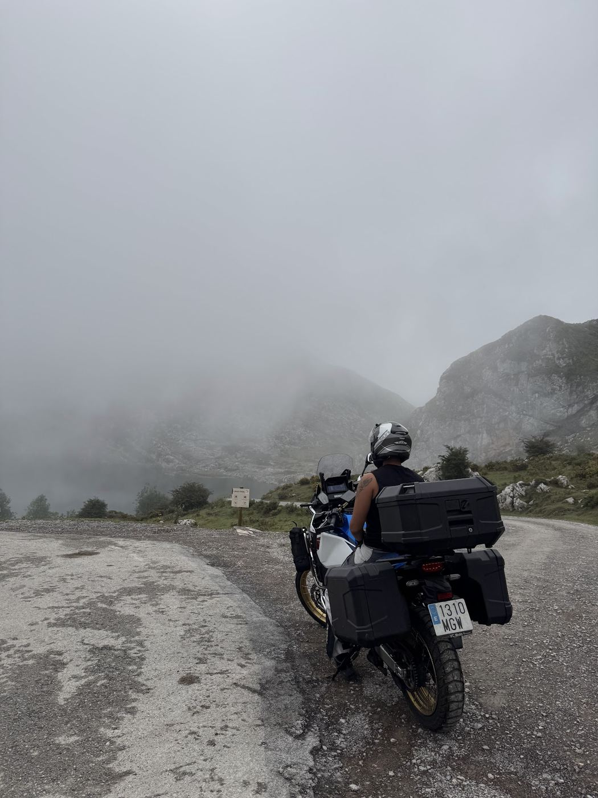
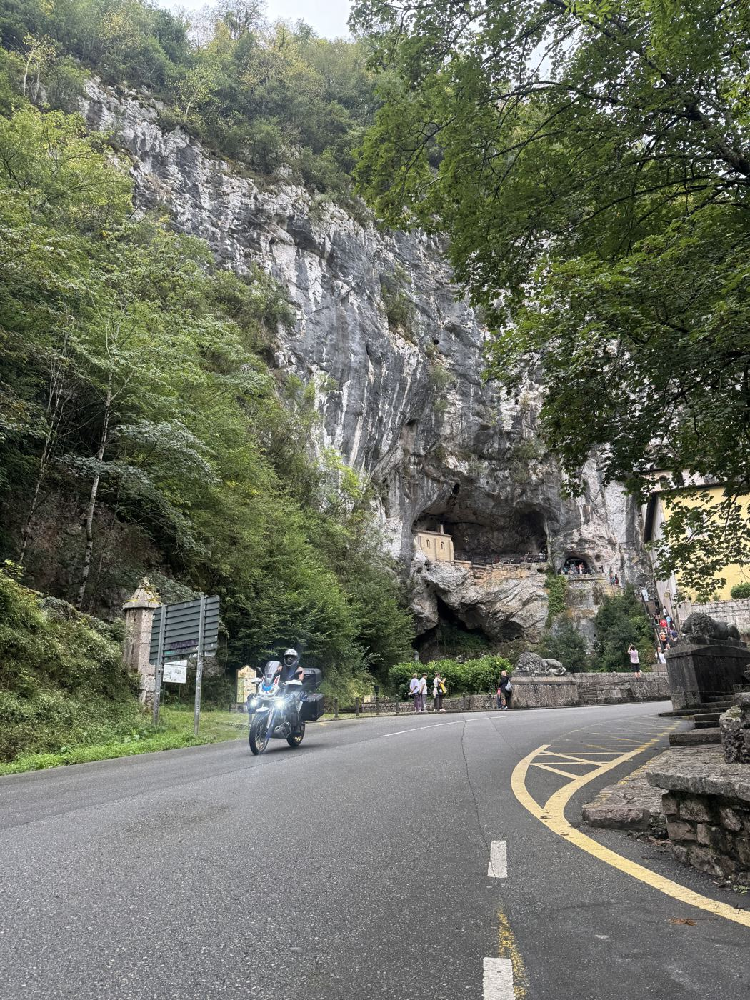
É um dos lugares mais famosos da região e, pra gente, visita obrigatória. A estrada até os lagos é cheia de curvas, sobe sem parar e tem vaca, cavalo e cabra soltos pelo caminho. Eles não estão nem aí pra você, então vai com calma.
Foi o único passeio da viagem em que a gente não escolheu a data. Como dependíamos da reserva no refúgio pra subir de moto, ficamos reféns de quando eles tinham disponibilidade, e não deu pra escolher o dia de acordo com o clima. O resultado: muita neblina, e não conseguimos ver os lagos como a gente queria. Mesmo assim, o lugar continuava lindo, e a subida de moto já vale o passeio.
Como a gente conseguiu subir de moto
Em épocas de muito movimento (Semana Santa, feriados e o verão, mais ou menos de junho a meados de outubro), a estrada entre Covadonga e os lagos fecha para veículos particulares, e a subida é de ônibus ou táxi.
A gente descobriu uma alternativa: fizemos uma reserva pra comer no Refugio Vega de Enol, que é refúgio e restaurante lá em cima. Na época pagamos 40 € pra duas pessoas, descontados do que consumimos, e com isso pudemos subir com a nossa moto.
As regras oficiais dizem que reserva em restaurante não libera a subida, mas reserva em refúgio sim: eles pedem a placa do veículo pra avisar o parque. Antes de ir, confirme direto com o refúgio, e lembre que os 40 € são o que a gente pagou, não um preço garantido.
2. Santuário de Covadonga
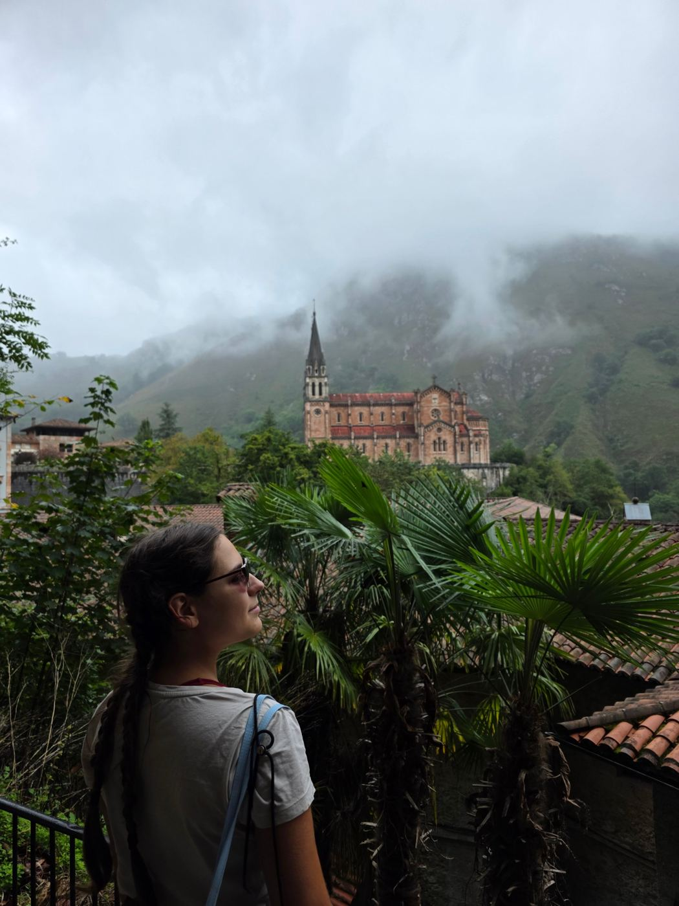
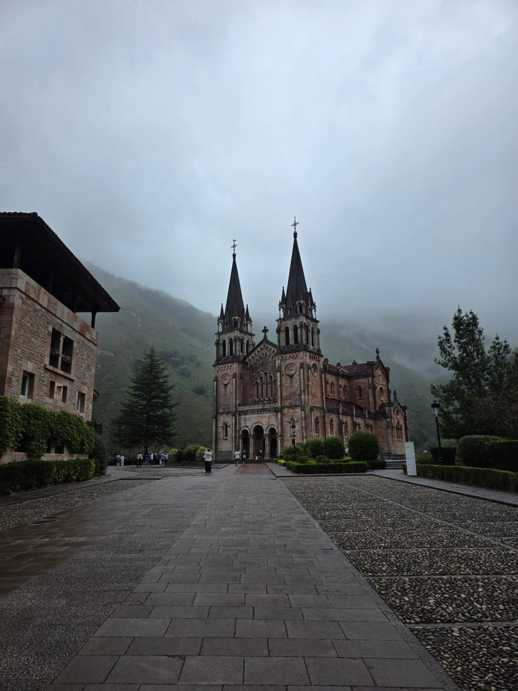
Fica no caminho dos lagos, então aproveita e para. A basílica é linda e imponente, de pedra rosada no meio da montanha. Um pouco abaixo fica a Santa Cueva, a gruta escavada na rocha onde está a Santina, a Virgem de Covadonga, com uma cascata caindo logo embaixo.
E tem a Fonte dos Sete Canos, a famosa "fonte do casamento": diz a tradição que quem bebe da água dela se casa dentro de um ano. Se casar não está nos seus planos, melhor trazer sua própria garrafinha.
3. Vivac no Refúgio de Urriellu
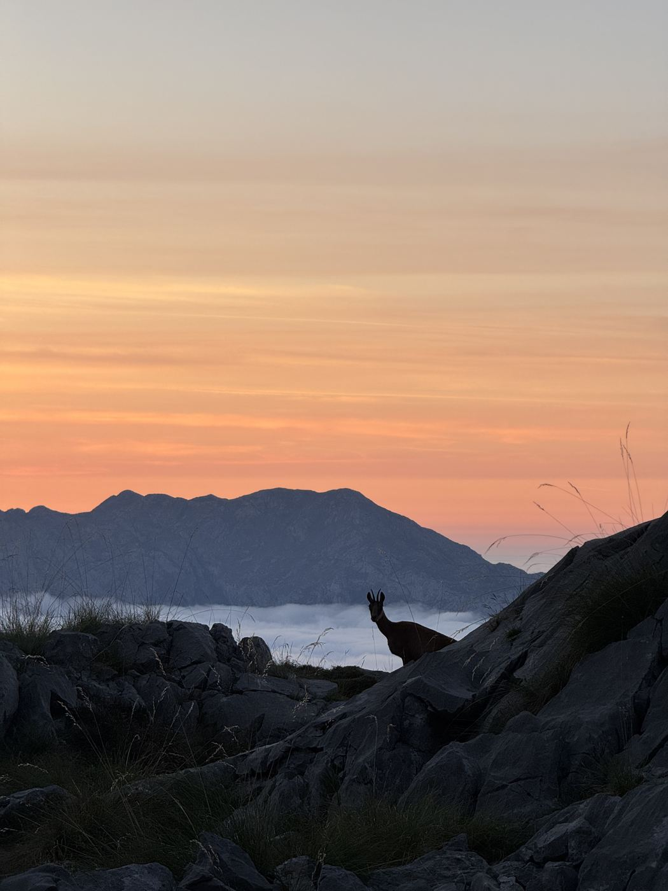
As nuvens ficam lá embaixoEssa foi uma das experiências mais especiais da viagem, e pra gente é absolutamente imperdível.
Fazer vivac é passar a noite na montanha, dormindo ao ar livre, respeitando as regras do lugar. Muita gente faz isso no Urriellu pra seguir outras trilhas no dia seguinte ou pra escalar o Naranjo de Bulnes (o Picu Urriellu), aquela parede de pedra gigante que aparece em todas as fotos.
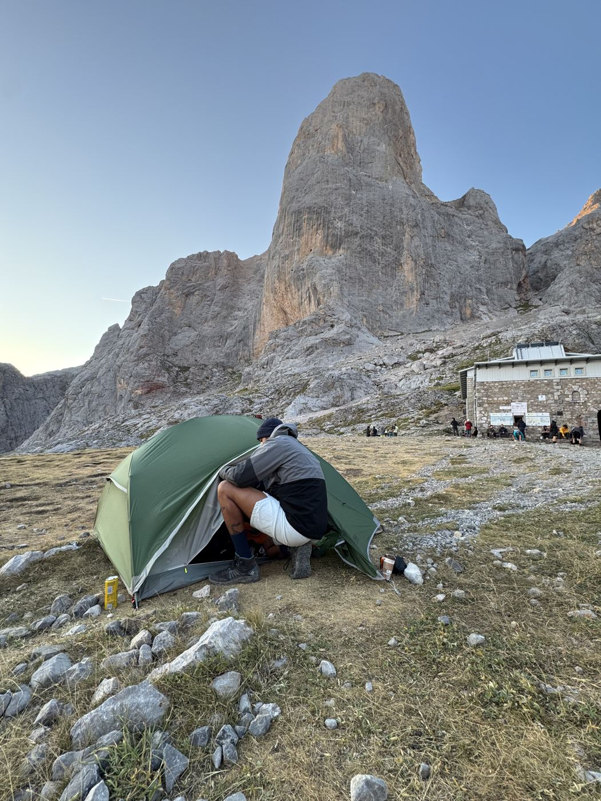
O Naranjo de BulnesA trilha até o refúgio é maravilhosa: paisagem incrível o tempo todo e um monte de bicho no caminho, principalmente cabras. Conforme você sobe, as nuvens vão ficando abaixo de você, e chega uma hora em que parece que você está andando em cima delas. Dormir ao lado de um refúgio de alta montanha, com esse visual, é difícil de explicar.
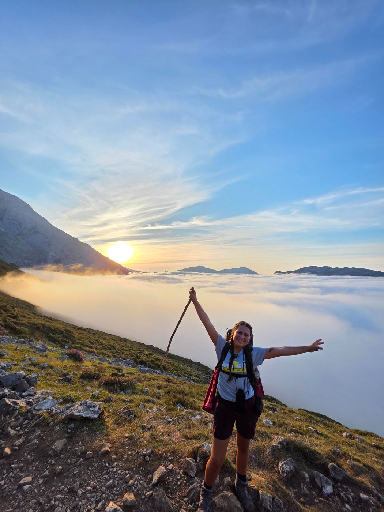
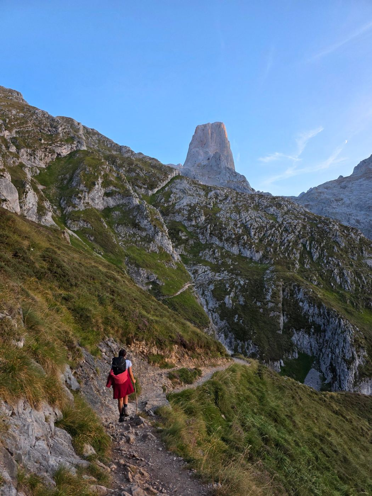
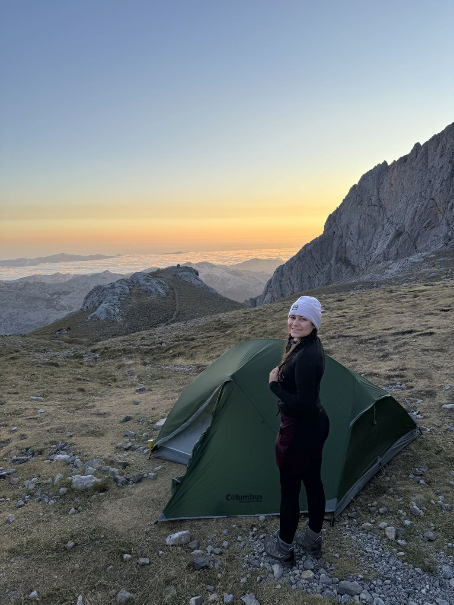
ATENÇÃO: ÁGUA!
Essa é a informação mais importante deste guia.
Quando fomos, o refúgio não vendia água, só Aquarius e alguns refrigerantes, tipo Coca-Cola e Fanta. A gente perguntou o porquê e explicaram que a comida e a bebida sobem até o refúgio no lombo de burros e jumentos. Como não dá pra encher os bichos de peso, eles acabam levando só comida e poucas bebidas.
Antes de subir, a gente ligou pro refúgio e só disseram que não vendiam água e que dava pra pegar na fonte. O que ninguém contou é que a fonte era lentíssima: levava uns 10 minutos pra encher uma garrafa de 1 litro. Quando chegamos, tinha fila de mais de quatro horas pra pegar água.
A gente tinha levado pouca água pra economizar peso, contando com o refúgio. Foi um erro: passamos bastante sede, e ainda bem que levamos umas bolachas e a carne que tinha sobrado do almoço.
Não conte com a água do refúgio sem confirmar antes. Leve água pra subida, pra noite e pra descida.
Informações práticas
- Acesso de moto: o caminho até o início da trilha (o Collado de Pandébano, saindo de Sotres) tem trechos de terra com pedra e cascalho, bem irregular. Com uma moto que não seja trail, pode ser complicado.
- Controle de acesso: no verão, o acesso e o estacionamento em Pandébano são controlados e as vagas são poucas. Dependendo do horário, você tem que deixar a moto mais longe e andar uns 2 a 3 km a mais até o começo da trilha. A gente recomenda chegar no fim da tarde, principalmente se for fazer o vivac.
- Dificuldade: moderada a difícil. A nossa subida levou umas 3 a 4 horas. Leve em conta seu preparo físico.
- Lanterna: leve lanterna ou headlamp. A gente chegou quando já estava escuro.
- Barraca ou só saco de dormir? O regulamento do parque diz que o vivac só é permitido acima de 1.800 m (o refúgio fica a uns 1.950 m), ligado a atividades de montanha, e que a barraca só pode ser montada em caso de mau tempo. Só que eu liguei pro refúgio, perguntei se podia montar barraca e eles disseram que sim. Fiquei na dúvida entre seguir o regulamento ou o que o pessoal do refúgio dizia, então subimos sabendo que talvez não desse pra montar a barraca e que, nesse caso, a gente dormiria só com o saco de dormir. Quando chegamos lá, tinha mais de 50 barracas montadas, então montamos a nossa também. Confira as regras atuais antes de ir.
4. Descida do Rio Sella
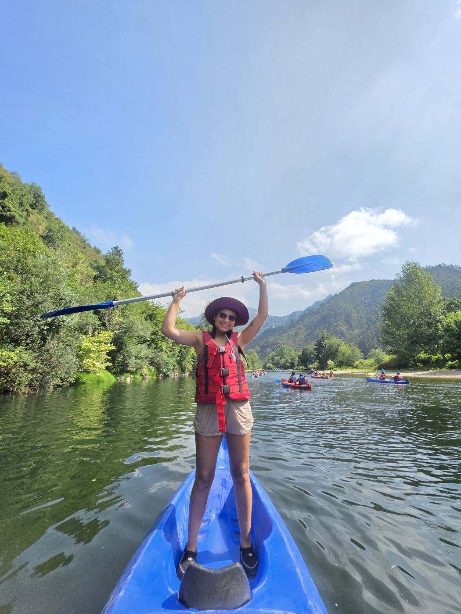
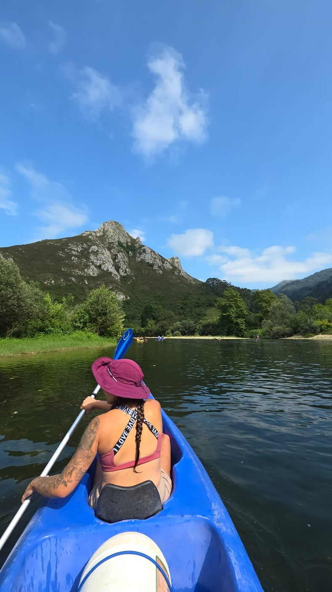
Outra coisa muito divertida que a gente fez: descer o Rio Sella de caiaque. O percurso tem uns 17 km (depende de onde você sai) e leva de 5 a 6 horas, mas sem pressa nenhuma: dá pra parar pelo caminho pra descansar e comer, e tem bares e quiosques na beira do rio.
É bem popular, então tem muita gente descendo junto. Tem uns trechos mais aventureiros, mas no geral é tranquilo e divertido. Vimos famílias com crianças e até gente levando o cachorro na canoa.
A gente fez com a Los Cauces, em Arriondas. Se você gosta de atividade ao ar livre, coloca na lista.
5. A volta de moto pelos Picos
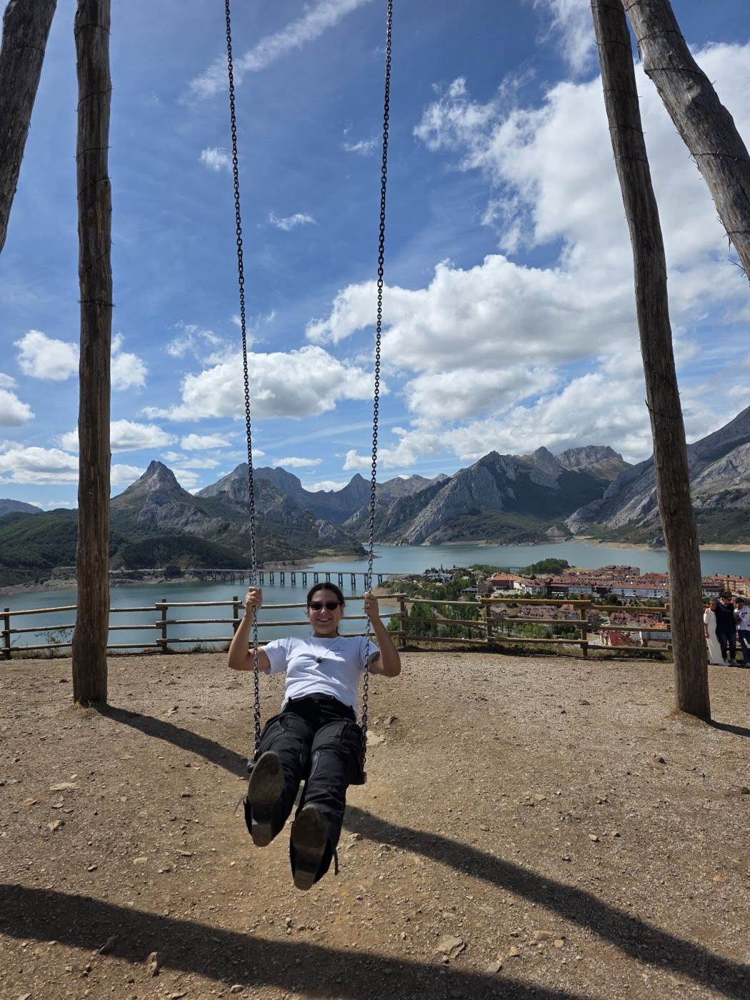
O balanço de RiañoPra gente, é indispensável reservar um dia inteiro pra um passeio grande de moto. A ideia é sair de Cangas de Onís e seguir pelas estradas que contornam os Picos, passando pelas três comunidades. É curva atrás de curva, a paisagem muda o tempo todo e a sensação de liberdade é enorme.
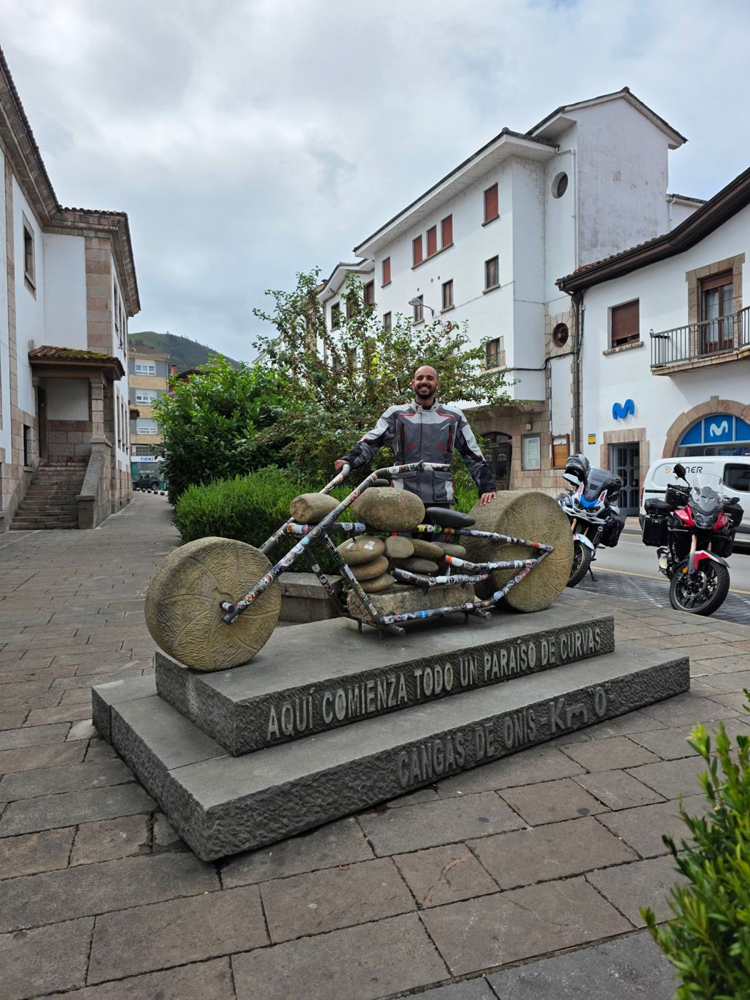
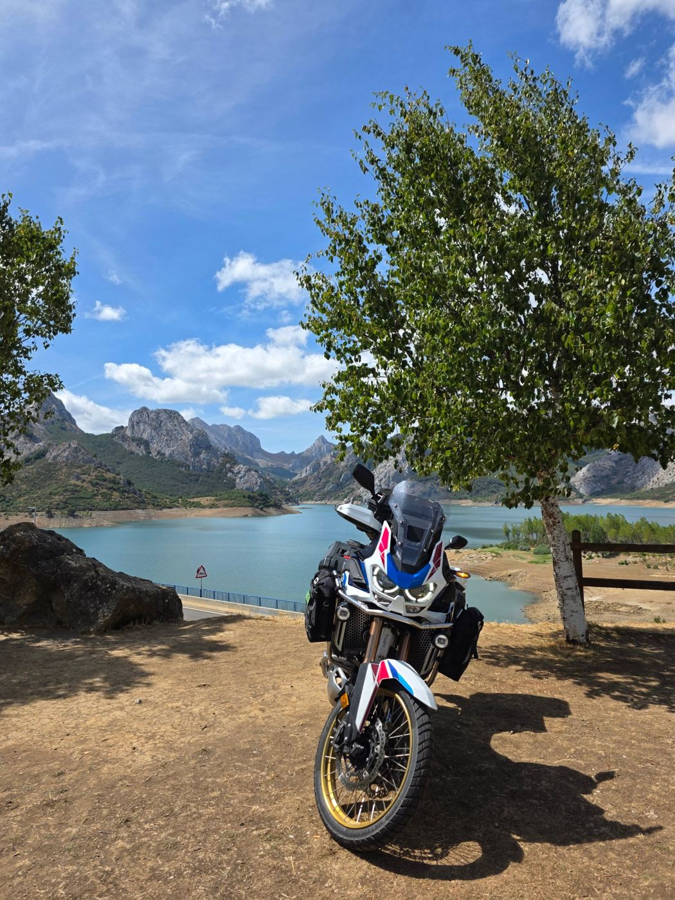
Do lado de Castela e Leão, a parada principal é Riaño, já fora do Parque Nacional, na Montaña de Riaño (um parque regional vizinho). O lago lá parece um fiorde. Os pontos onde a gente parou:
- Banco gigante de Burón: um banco de uns 4 metros de altura, na entrada do vilarejo de Burón, que faz você se sentir criança.
- Balanço de Riaño: no Mirador de Las Hazas, com o lago inteiro aos seus pés.
- O coração: a escultura em forma de coração no Mirador del Alto Valcayo, pertinho do balanço.
- "O banco mais bonito de León": é esse o nome oficial mesmo. Fica em Riaño, de frente pro lago. Do ladinho tem uma área de piquenique, onde a gente parou pra comer alguma coisa olhando o lago. Recomendamos muito essa pausa.
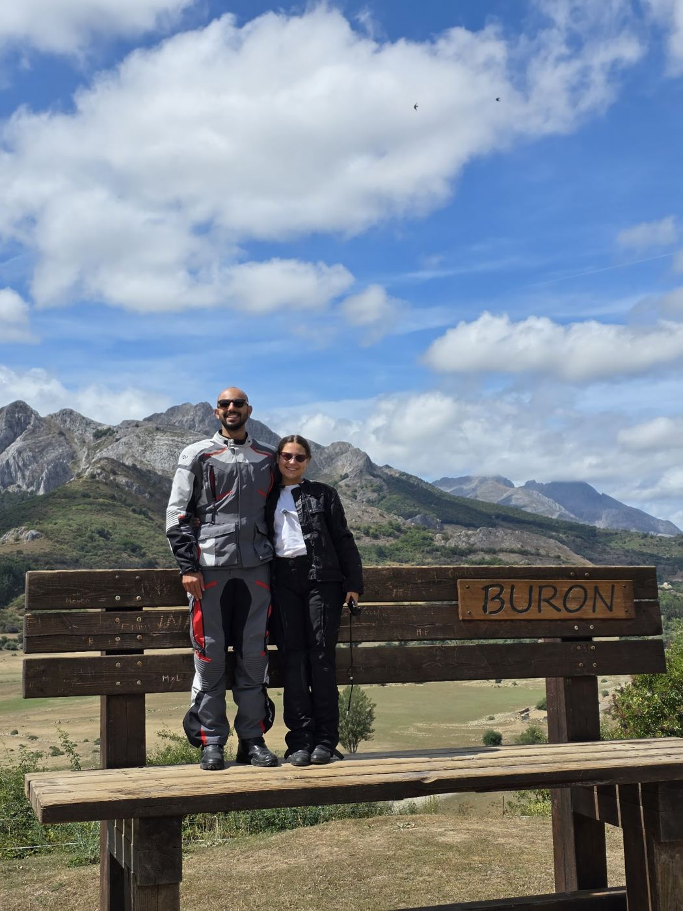
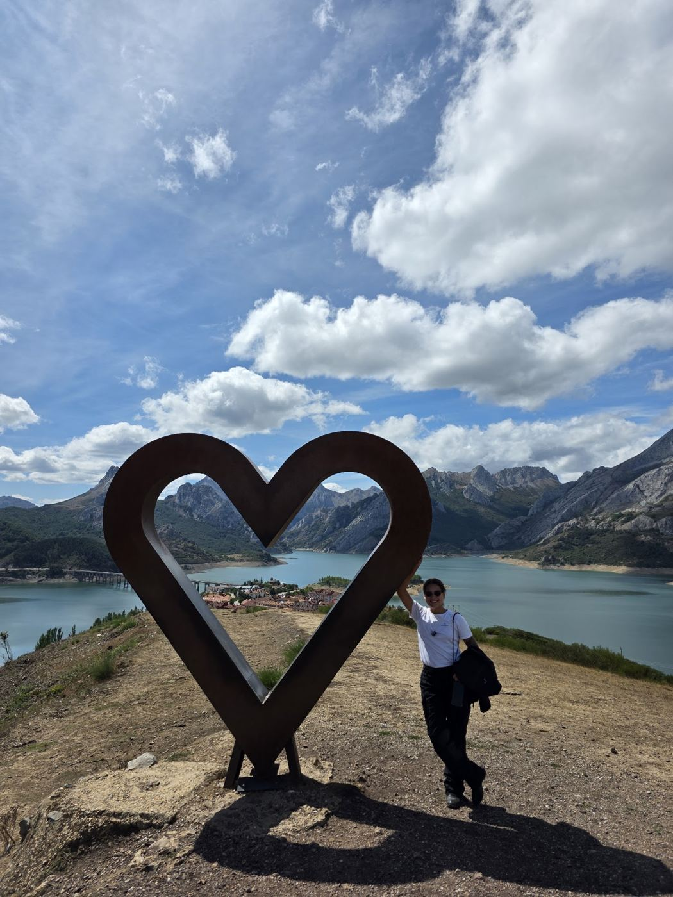
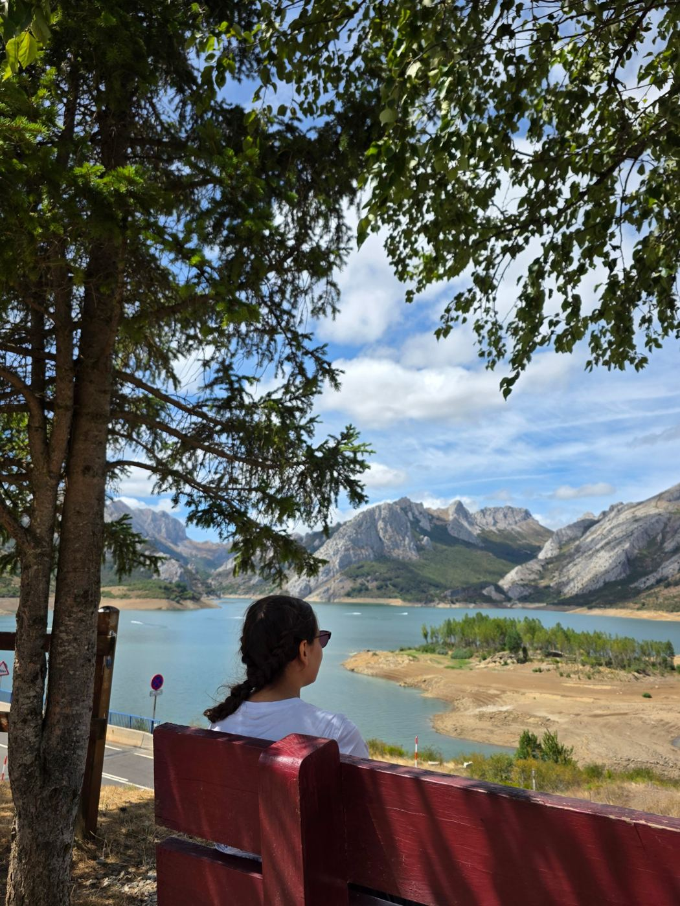
Já do lado da Cantábria, no Puerto de San Glorio, ficam dois mirantes com estátuas de animais:
- Mirador de Llesba (Mirador del Oso): com a estátua de um urso e vista pros Picos.
- Mirador del Corzo: com a estátua de um corço.
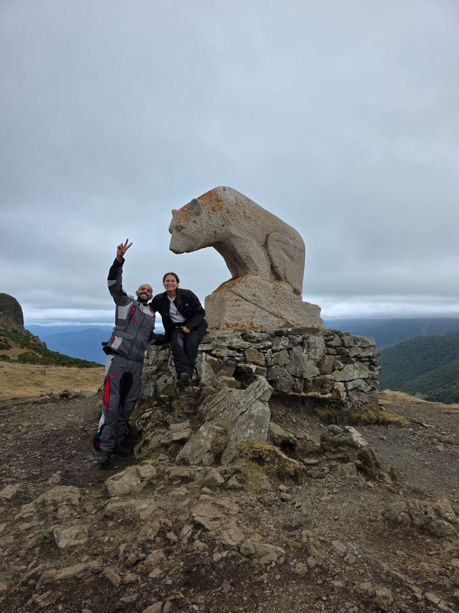
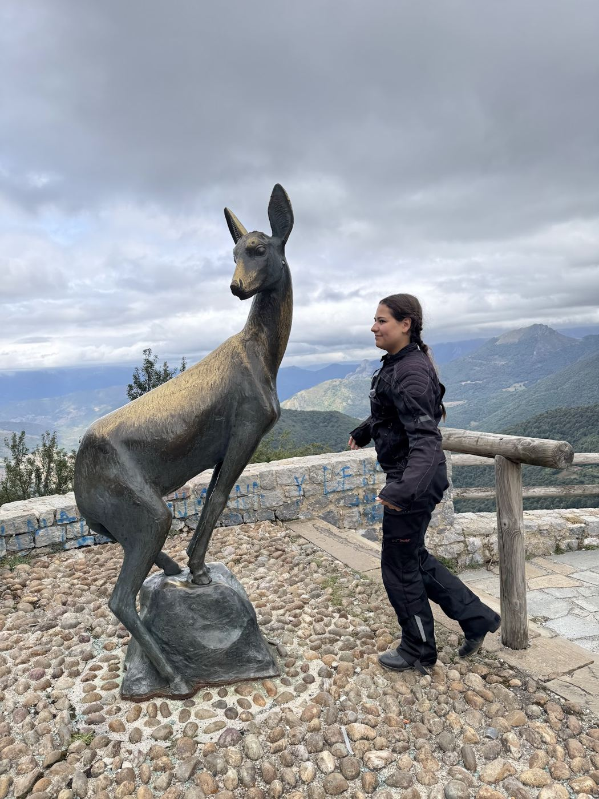
6. Sotres e a estrada até Tresviso
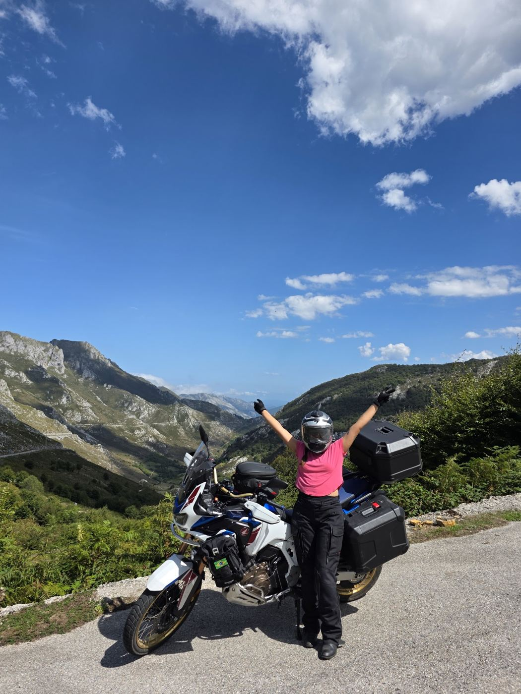
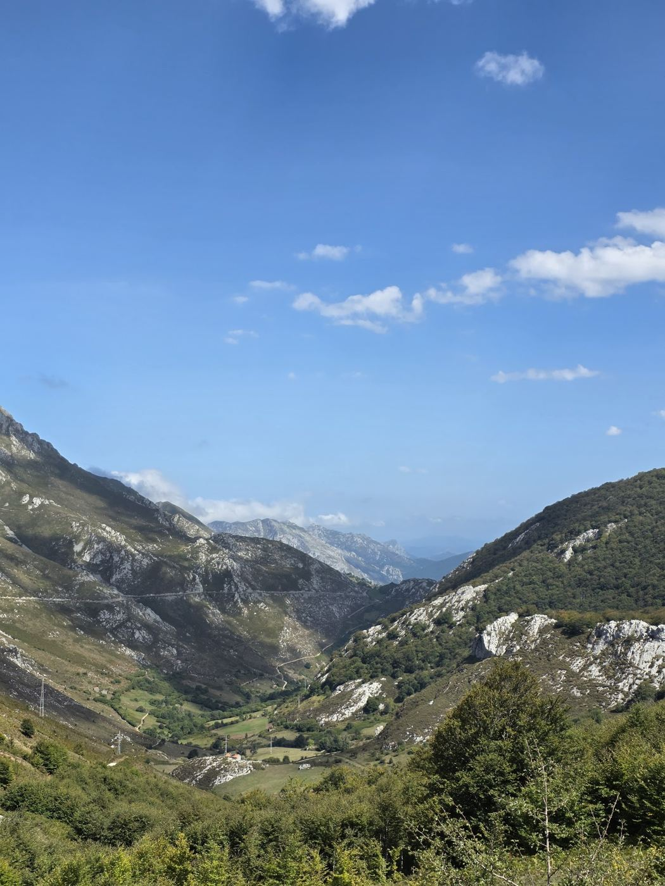
Sotres foi uma das nossas descobertas favoritas. Chegamos no vilarejo, paramos pra comer e pedimos fabada asturiana e tarta de queso al horno. Depois vimos que tinha uma estrada que a gente não conhecia e resolvemos seguir por ela.
Foi uma das melhores decisões da viagem! Era a estrada que liga Sotres a Tresviso, já do lado da Cantábria, e é uma das estradas mais bonitas que a gente já passou: montanha pra todo lado, curvas gostosas de pilotar e fontes de água natural pelo caminho.
E o melhor de tudo: uma mesinha de piquenique com vista pras montanhas.
Fica a dica: vale muito a pena sair dos pontos turísticos mais famosos e ver aonde a estrada te leva.
7. Banho de rio em Cangas de Onís
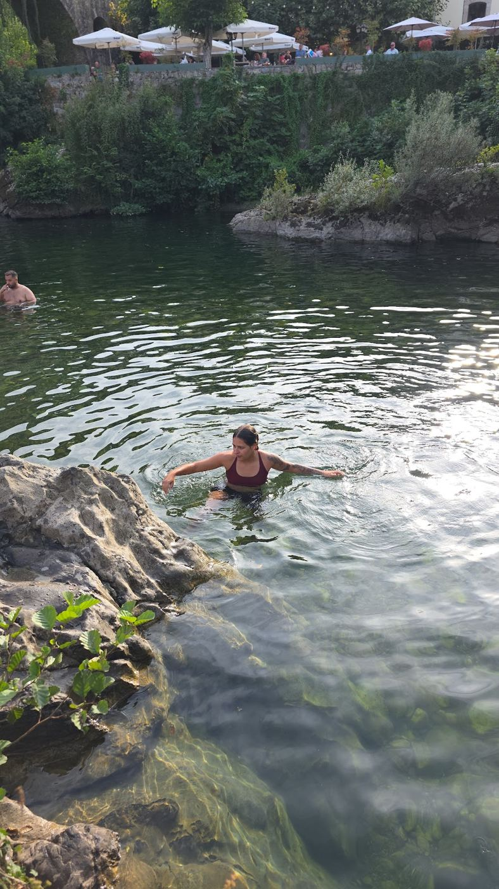
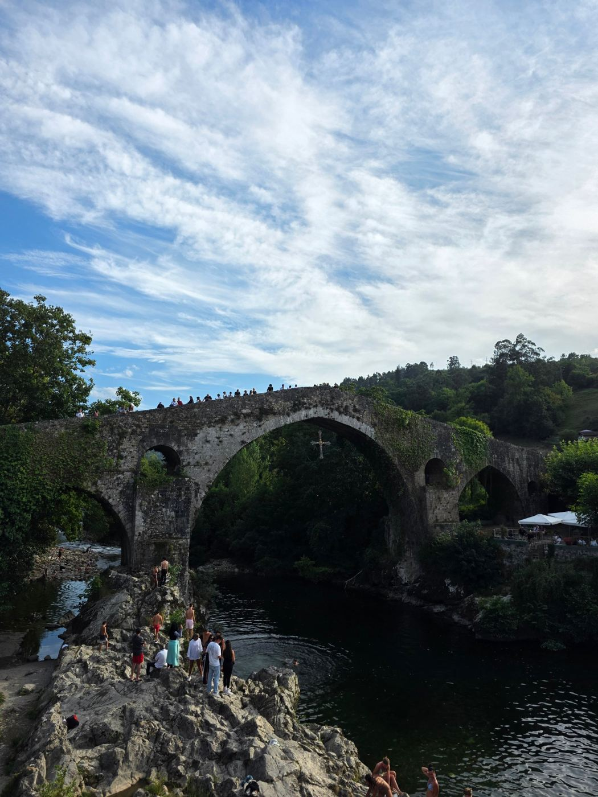
É simples, mas pra gente é imperdível. Cangas de Onís é uma das principais bases pra conhecer a região e é famosa pela ponte de pedra sobre o Rio Sella (chamada de "Ponte Romana", apesar de ser medieval).
Depois de ver a ponte, desce até o rio e toma um banho! É muito comum ver gente curtindo o rio na maior tranquilidade, mesmo no meio da cidade. Reserva um tempinho pra dar aquele tibum.
Onde ficamos: Camping Picos de Europa
A gente ficou no Camping Picos de Europa, em Avín (Onís), uns 15 km a leste de Cangas de Onís.
Reserve com antecedência
Reservamos com uns 15 dias de antecedência e foi o único camping disponível que encontramos. Muitos campings da região funcionam principalmente no verão, e nessa época tudo fica muito disputado.
É um camping simples, mas que atende bem:
- Tem parcelas de tamanhos diferentes. A nossa era pequena, mas coube a moto e a barraca.
- Tem área de churrasqueira e espaço pra cozinhar.
- Os banheiros e chuveiros eram ótimos.
- Tem máquina de lavar roupa.
Pra gente, é um camping honesto e funcional, que atende bem quem está viajando de moto e acampando.
Pra fechar
Essas foram as experiências que a gente viveu nos nossos sete dias pelos Picos de Europa. São as que a gente considera imperdíveis, mas a região é enorme e tem muito mais coisa pra fazer.
Os Picos são muito mais que os pontos turísticos famosos: tem estrada incrível pra explorar de moto, vilarejo, rio, trilha, montanha e paisagem que merece ser descoberta sem pressa.
Quer ver como foi? Você encontra tudo isso nos destaques do meu Instagram. Lá eu mostro tudinho.
E você, já conhece os Picos de Europa ou está planejando ir? Conta pra gente lá no Instagram!
Falar com a gente no Instagram